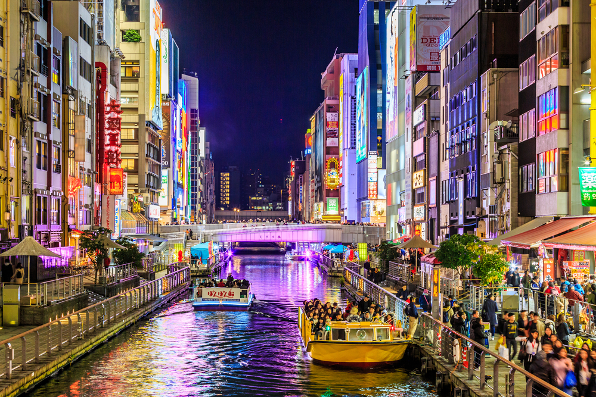
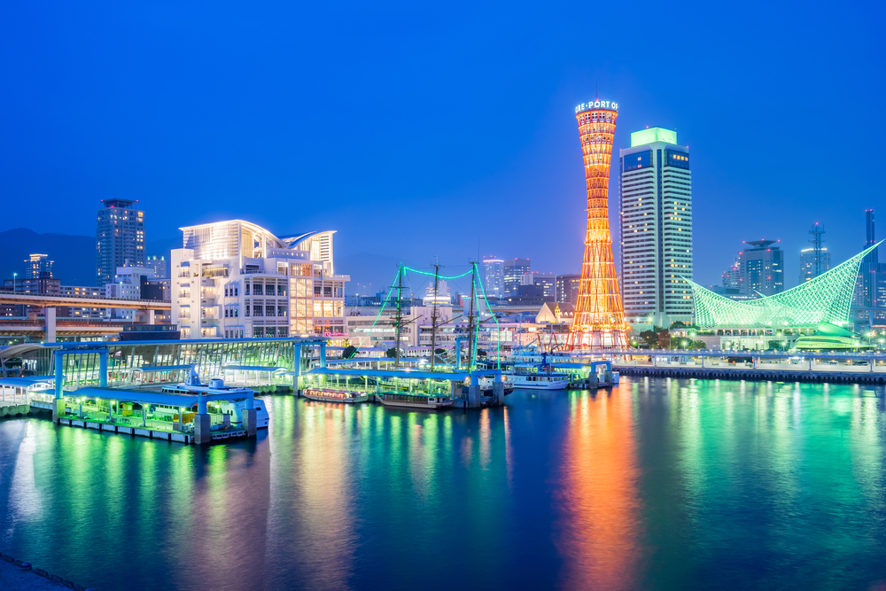
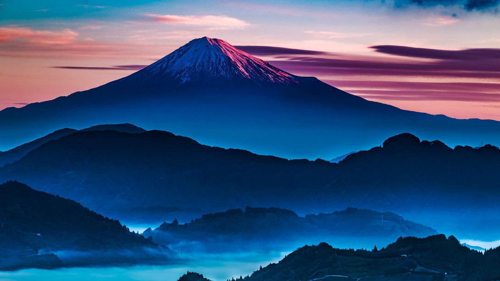
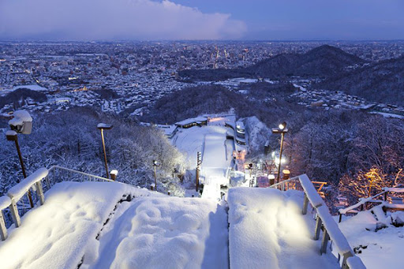

Ponude
Tokio
Tokio je centralno mesto japanske politike, ekonomije, kulture i obrazovanja, kao i grad u kom stoluje japanski car. Tokio je i poslovni i finansijski centar istočne Azije. Ovaj grad je prepun znamenitosti, poput Carske palate, Tokio tornja, hrama Sensođi i ulica Akihabara, Šibuja, Ropongi itd.

Osaka
Osaka je treći po veličini grad u Japanu. Istorijski je trgovački centar Japana i još uvek je jedan od najvećih industrijskih centara i luka. Neke od znamenitosti Osake su Zamak Osaka, Ulica Dotonbori, Universal Studios Japan, Akvarijum itd.
Kobe
Kobe je sedmi grad po veličini u Japanu. Neke od znamenitosti koje krase ovaj prelep grad su most Akaši-Kaikio, Toranj u luci, termalni izvori Arima Onsen, Galerija Genius itd.
Fudži
Fudži ili Fudžijama najviša je planina u Japanu, visoka 3.776 m. Planina Fudži je vulkan koji je poslednju erupciju imao 1707. godine, ali ga geolozi generalno još uvek svrstavaju u aktivne. Ime planine potiče iz Ainu jezika i znači večni život. Planina Fudži, sa svojim elegantnim, kupastim oblikom, postala je poznata širom sveta i smatra se svetim simbolom Japana. Fudži je kroz istoriju bio veoma popularna tema u umetnosti. Planina je glavni deo nacionalnog parka Fudži-Hakone-Izu.
Saporo
Saporo je glavni i najveći grad ostrva Hokaido. Ovde su bile 1972. bile održane Zimske Olimpijske igre. Od znamenitosti izdvajamo šintoistički hram Hokaido Džingu, park Odori i bivšu zgradu vlade Hokaida.
